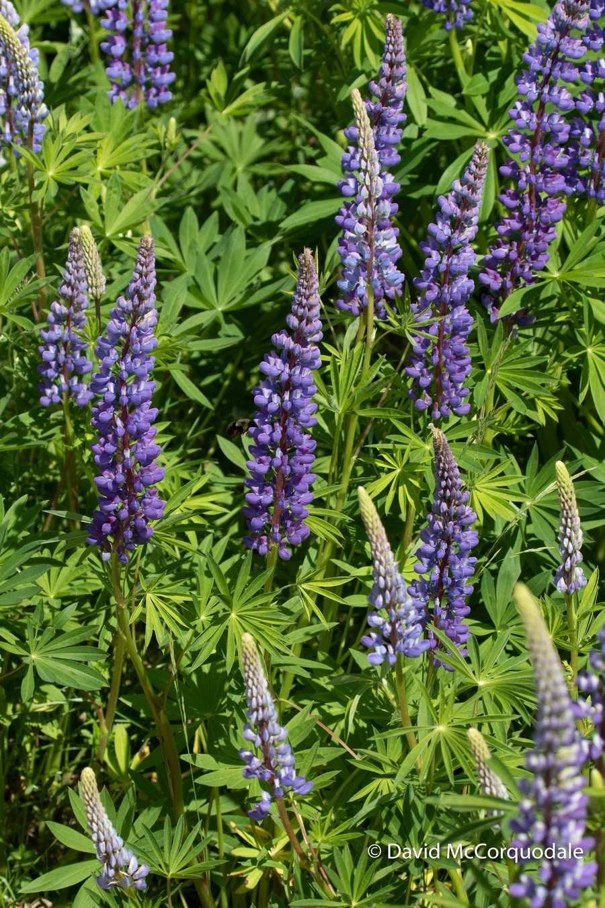

花卉与草本 · 植物界
羽扇豆 Lupinus polyphyllus

豆科多年生草本，掌状复叶如羽扇，塔状花序由蓝紫、粉、黄等色小花密集组成，是花境中的竖线条明星，原产北美。
- 分类
- 门被子植物门纲木兰纲目豆目科豆科属羽扇豆属
- 栖息环境
- 北美西部的山地草甸与林缘，喜凉爽、阳光充足
- 地理分布
- 原产北美洲西部，现世界各地栽培，中国各地花境常见
- 保护级别
- 暂无评估
物种志
羽扇豆为豆科羽扇豆属多年生草本，株高 80–150 厘米，茎直立，全株被短毛。掌状复叶由 7–15 枚小叶组成，形似张开的羽扇。总状花序顶生，长 30–60 厘米，由数十至上百朵蝶形小花从下往上排列，有蓝紫、粉、红、黄、白等色，花期 5–7 月；果实为荚果。
羽扇豆原产北美洲西部，喜凉爽、阳光充足和排水良好的环境，耐寒不耐酷热，适合在疏松的微酸性土壤中栽培。它花序高挺、花朵密集，是花境中优良的竖线条材料，成片种植时如一座座彩色宝塔；园艺品种还有矮生类型，可作盆栽。羽扇豆的根系能固氮，可改善土壤；种子和植株含生物碱，有毒，不可食用。
形态与习性
- 株高80–150 厘米，茎直立
- 花期5–7 月，花序长 30–60 厘米
- 果期花后结荚果
- 光照喜充足阳光
- 水分喜湿润，忌积水
- 土壤疏松、排水良好的微酸性土壤
- 繁殖以播种为主
- 主要用途花境、切花、固氮改良土壤
趣味知识
- 羽扇豆的掌状复叶形似张开的羽扇，因此得名。
- 塔状花序由上百朵小花从下往上排列，是花境的竖线条材料。
- 它的根系能固氮，可改善土壤肥力。
- 种子和植株含生物碱，有毒，不可食用。